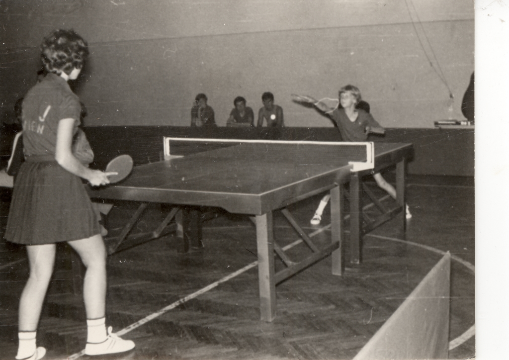

Stolni tenis
KRONOLOGIJA
1931.
u sklopu Slavije osnovana ping pong sekcija
1940.
VŠD osniva i stolnotenisku sekciju - prvi stolnoteniski prvak Varaždina bio je Ljubomir Šantek
1941.
stolnotenisači VŠD prvaci prvenstva Varaždin - Čakovec - Lendava, a na prvenstvu Hrvatske u Zagrebu osvajaju treće mjesto
1968.
stolnoteniski trener Mirko Abramović konstruirao i patentirao posebni robot za izbacivanje stolnoteniskih loptica
20. veljače 1969.
osnovan stolnoteniski klub Varaždin


Stolnoteniski meč, oko 1975., GMV 106594
1973.
seniorke STK Varaždin osvojile prvenstvo Hrvatske
29. studenoga 1978.
otvorena novosagrađena stolnoteniska dvorana na Srednjoškolskom igralištu
1981.
Europska super liga u stolnom tenisu - Jugoslavija - Francuska
Reprezentacija Jugoslavije uoči meča s Francuskom, 1981., GMV 106595
1988.
STK Varaždin prvakinje Jugoslavije u paru
1989.
Anita Tomašić u paru brončana na SP u Luxembourgu
1998.
STK Varaždin najuspješniji u Hrvatskoj, pod imenom STK Varteks